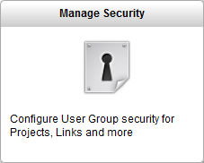
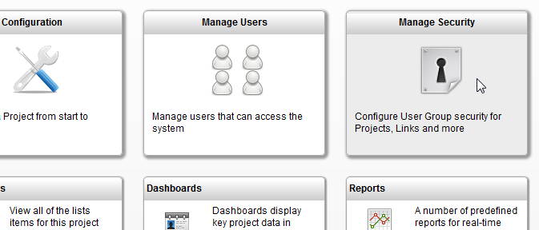

This document only applies to security level 2. This security level can be set in the TACTIC config file.
To open the Manage Security view, go to the sidebar under:
Project Startup → Manage Security

Note
The default security level for a fresh install of TACTIC 3.7 is security level 1.
The default security level for a fresh install of TACTIC 3.8 is security level 2.
If upgrading from TACTIC 3.7 to 3.8, the security level is not affected (and will probably be level 1).
The security level can be set in the TACTIC config file.
In the Manage Security view, the following tools are provided:
Project Security | Determines which project each group can see. Each project is listed with checkboxes for each group. Adding a checkmark allows the users associate with that group to see the project. |
Link Security | [multiblock cell omitted] |
sType Security | [multiblock cell omitted] |
Process Security | Provides low level security for all items. At this level, even the API will respect these security levels.. |
Groups List | Lists all the groups. The following fields can be modified: group, description, users, global access ruls, start link |
TACTIC provides a set of predefined security access levels (i.e. none, low, medium, high) to make it easier to start setting up what a group can see. Associating a group with an access levels presets all the security settings. After that, the administrator can return the Managing Security tool to allow further access in addition to the presets. The presets are outlined in the table below. By default, when an access level is not manually provided for a group, a low access level is assigned.
Description of Access Privileges
access level: none | [multiblock cell omitted] | [multiblock cell omitted] |
access level: min | [multiblock cell omitted] | [multiblock cell omitted] |
access level: low | [multiblock cell omitted] | [multiblock cell omitted] |
access level: medium | [multiblock cell omitted] | [multiblock cell omitted] |
access level: high | [multiblock cell omitted] | [multiblock cell omitted] |
Note
In the Group List view, if the field name Project Code is left empty, then the group can see all the projects.
If the field named Project Code is filled in, then the access rules are specific to that project.
To better understand the differences between the Access Levels, the following is an explanation of how the levels were built up:
Access Level None: cannot see anything. Need to use Security tools, as shown in the "What the Manage Security View Provides" section, to define fully customized group security i.e. Project, Link, sType and Process Security tools
Access Level Min: Can see some projects and sTypes.
Access Level Low: Default Access Level. Can see what min sees and all the processes.
Access Level Medium: Can see what low sees and all the projects.
Access Level High: Can see what medium sees and all the links.
To set the access level for a group go to the sidebar under:
Project Startup → Manage Security → Groups List → Access Level
The solid green check mark indicates that a privilege is due to the Access Level associated to the group that the user is in. In order to remove the green check mark, the user must be removed from this group or the group’s Access Level must be changed.
If additional privileges are added, the check marks are blue with a green background.
In the screen shot below, the group (named high) is the only group with Access Level High. The TACTIC Administrator added the other privileges for the other groups.
For more advanced access control (such as controlling access to edit individual columns), please see the setup doc title: Advanced Access Rule Configuration